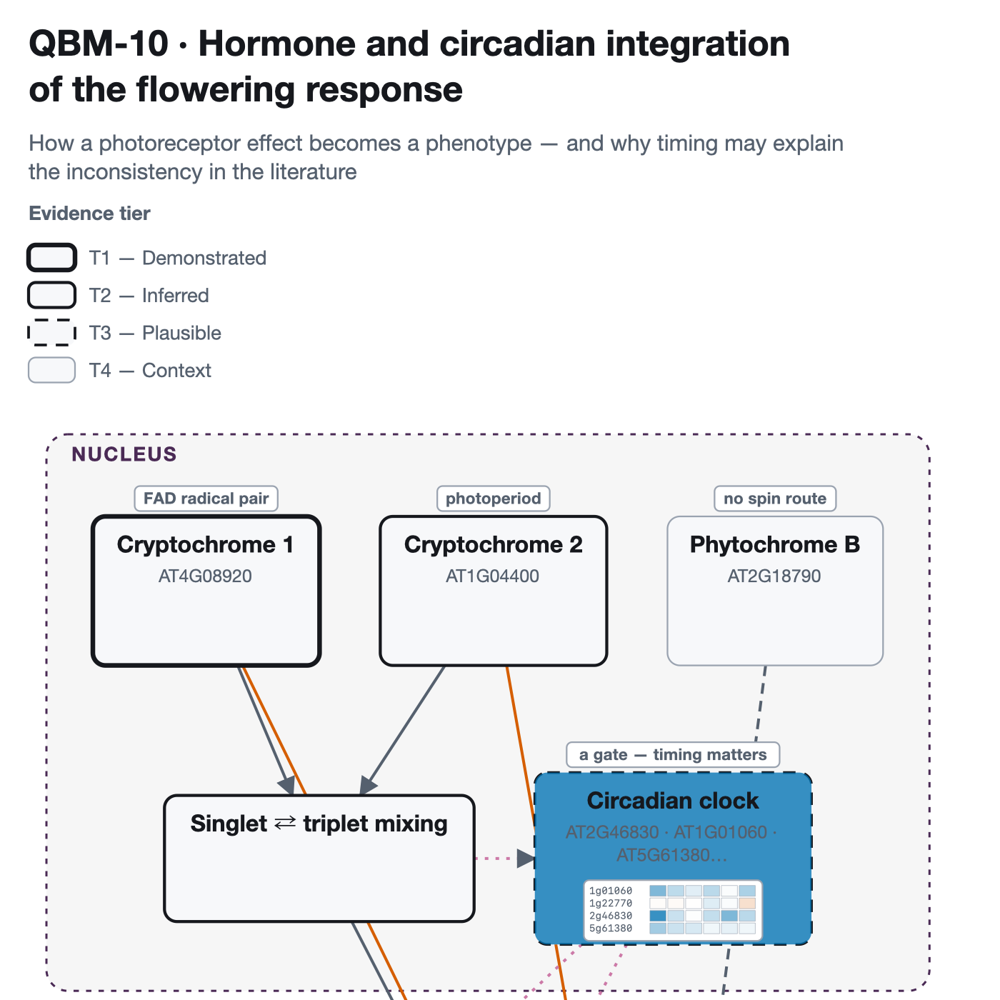
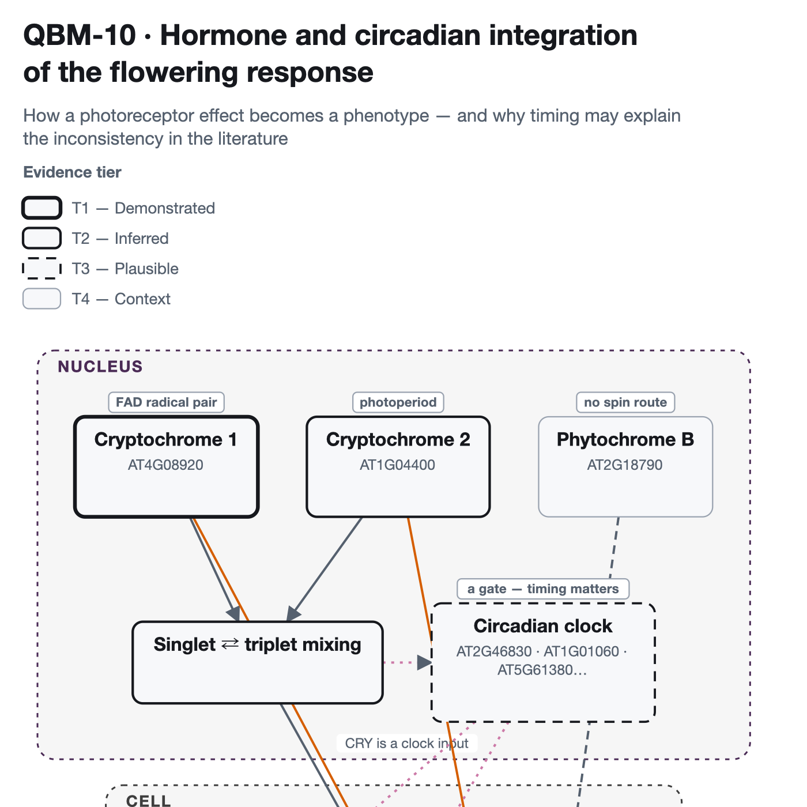
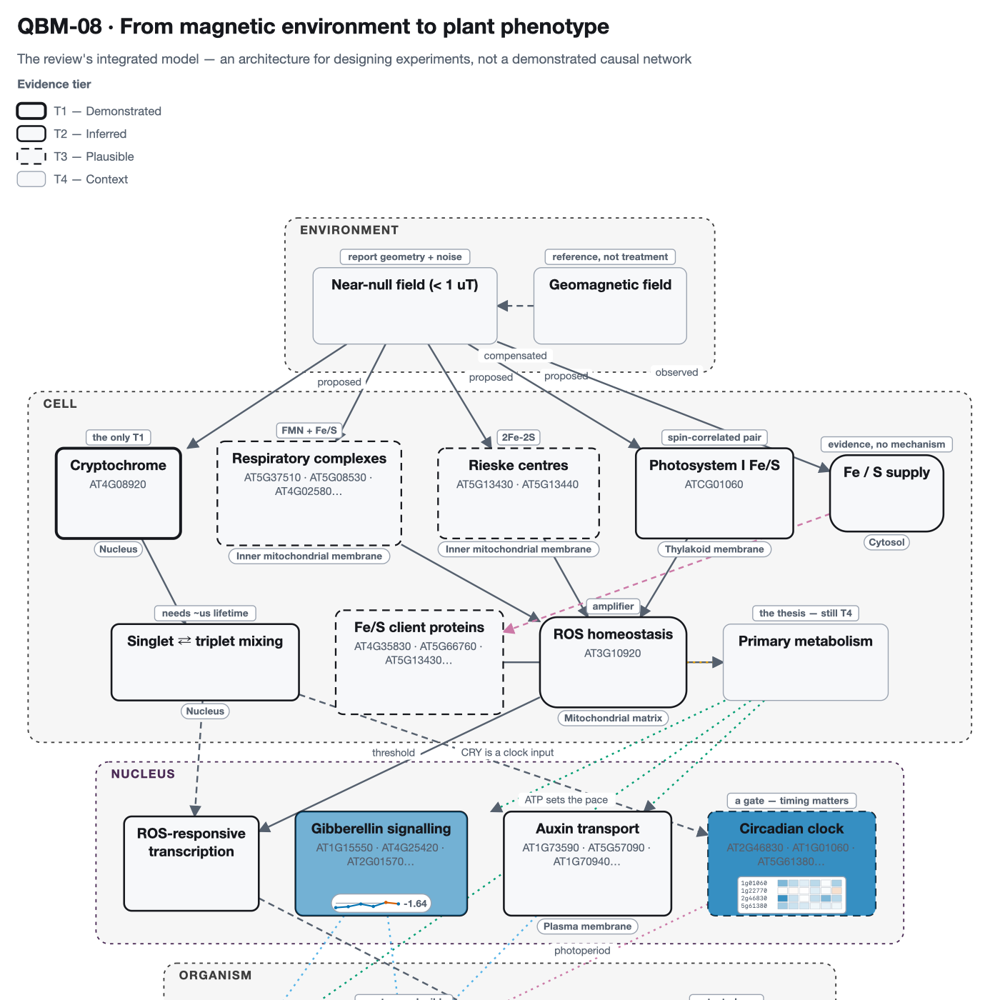
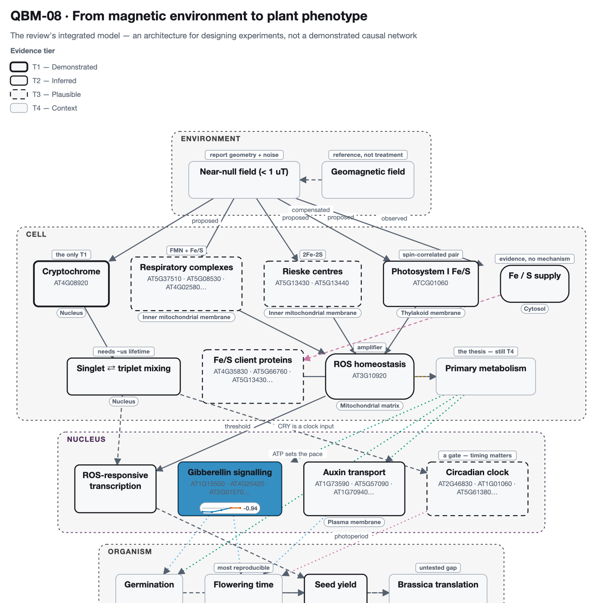

Time on a map
A 6-point near-null-field time course — 17, 19, 21, 22, 23, 28 — in roots and shoots, projected onto the redox and respiratory maps. Every other overlay in this atlas is a single snapshot; this one is a trajectory, which is the only way to see a node that goes down and then comes back.
Source: Agliassa, Narayana, Bertea, Rodgers & Maffei (2018), Bioelectromagnetics 39(5):361-374, doi:10.1002/bem.22123, Arabidopsis thaliana.
- 26loci in the source table
- 7are QBO atlas loci
- 6timepoints × 2 tissues
- 196values parsed
These are the authors' published results, not a reanalysis. No raw data was deposited in any public repository. The article's Data Availability Statement reads, in full: “no Data Availability Statement is present in the article; the quantitative data appear only as main-text tables”
So nothing on this page can be recomputed, re-thresholded or re-tested from source
data. What is drawn is what the authors chose to report, read out of
main-text figures & tables and re-projected onto the maps. That is a weaker
provenance than the NASA OSDR pages in this atlas, which rest on processed data anyone
can download, and it is labelled differently throughout:
published_results.
What was measured
near-null magnetic field against the local geomagnetic field, in a triaxial Helmholtz coil system. Values are Agliassa's reported
fold change for hMF-grown plants relative to GMF-grown controls, as
mean ± SD.
The scale matters more than it looks. The published values are
ratios — 1.0 means no change — while every overlay in this atlas expects log2,
where 0.0 means no change. Feeding the ratios in directly would have coloured every
unchanged gene as strongly upregulated, and the figure would have looked completely
normal. The conversion happens in qbio.papers.Series.to_log2, the SD is
carried through the same transform rather than left in the wrong units, and
qbio.project.project_series refuses a series that is still on a ratio
scale.
The parse is complete: 196 cells read, 0 blank, 0 rows without a usable locus.
The QBO pathway maps
Each node is tinted by its extreme value; multi-locus nodes where isoforms diverge in sign (such as SUPEROXIDE_DISMUTASES displaying ObCSD vs ObFSD1) render a 2-row heatmap directly inside the node box.
{kind=link}

2 of 3 nodes reverse direction during the course (FLOWERING_REGULATORS, GA_SIGNALLING) — behaviour no single-contrast overlay can represent.
2-Row Heatmap (Isoform Divergence) on CIRCADIAN_CLOCK: AT1G08830 (ObCSD, Cu/Zn-SOD) is downregulated (-1.45, blue) while AT4G25100 (ObFSD1, Fe-SOD) is upregulated (+1.15, vermillion).
Values are the authors' published results from Agliassa, Narayana, Bertea, Rodgers & Maffei (2018), Bioelectromagnetics 39(5):361-374 (doi:10.1002/bem.22123), not a reanalysis: NNMF-grown plants relative to GMF controls at the equivalent timepoint. No raw data was deposited — the Data Availability Statement reads “no Data Availability Statement is present in the article; the quantitative data appear only as main-text tables”. Reported as log2 fold change; values are signed fold change — never reported strictly between -1 and +1 — so a negative number is a reciprocal, not a log. leaves, 6 timepoints (17, 19, 21, 22, 23, 28). 3 of 7 identifier-bearing nodes received a series (43%); 4 nodes carry no gene identifier and cannot. multi-locus nodes aggregated by extreme at each timepoint. 1 node(s) have loci that disagree in direction at the same timepoint (CIRCADIAN_CLOCK), so their single trace is the aggregator choosing between genes that are doing different things — read those per locus, not as a node. 2 node(s) reverse direction during the course (GA_SIGNALLING, FLOWERING_REGULATORS), which no single-contrast overlay can show.
{kind=link}

2 of 2 nodes reverse direction during the course (FLOWERING_REGULATORS, GA_SIGNALLING) — behaviour no single-contrast overlay can represent.
2-Row Heatmap (Isoform Divergence) on FLOWERING_REGULATORS: AT1G08830 (ObCSD, Cu/Zn-SOD) is downregulated (-1.45, blue) while AT4G25100 (ObFSD1, Fe-SOD) is upregulated (+1.15, vermillion).
Values are the authors' published results from Agliassa, Narayana, Bertea, Rodgers & Maffei (2018), Bioelectromagnetics 39(5):361-374 (doi:10.1002/bem.22123), not a reanalysis: NNMF-grown plants relative to GMF controls at the equivalent timepoint. No raw data was deposited — the Data Availability Statement reads “no Data Availability Statement is present in the article; the quantitative data appear only as main-text tables”. Reported as log2 fold change; values are signed fold change — never reported strictly between -1 and +1 — so a negative number is a reciprocal, not a log. floral meristem, 5 timepoints (21, 22, 23, 28, 30). 2 of 7 identifier-bearing nodes received a series (29%); 4 nodes carry no gene identifier and cannot. multi-locus nodes aggregated by extreme at each timepoint. 1 node(s) have loci that disagree in direction at the same timepoint (FLOWERING_REGULATORS), so their single trace is the aggregator choosing between genes that are doing different things — read those per locus, not as a node. 2 node(s) reverse direction during the course (GA_SIGNALLING, FLOWERING_REGULATORS), which no single-contrast overlay can show.
{kind=link}

Coverage is below the atlas's own 25% threshold (22%). It is shown anyway, with the number stated, because the map's remaining nodes are respiratory complexes the source table does not cover at all — not nodes that were measured and found unchanged.
1 of 2 nodes reverse direction during the course (GA_SIGNALLING) — behaviour no single-contrast overlay can represent.
2-Row Heatmap (Isoform Divergence) on CIRCADIAN_CLOCK: AT1G08830 (ObCSD, Cu/Zn-SOD) is downregulated (-1.45, blue) while AT4G25100 (ObFSD1, Fe-SOD) is upregulated (+1.15, vermillion).
Values are the authors' published results from Agliassa, Narayana, Bertea, Rodgers & Maffei (2018), Bioelectromagnetics 39(5):361-374 (doi:10.1002/bem.22123), not a reanalysis: NNMF-grown plants relative to GMF controls at the equivalent timepoint. No raw data was deposited — the Data Availability Statement reads “no Data Availability Statement is present in the article; the quantitative data appear only as main-text tables”. Reported as log2 fold change; values are signed fold change — never reported strictly between -1 and +1 — so a negative number is a reciprocal, not a log. leaves, 6 timepoints (17, 19, 21, 22, 23, 28). 2 of 9 identifier-bearing nodes received a series (22%); 10 nodes carry no gene identifier and cannot. multi-locus nodes aggregated by extreme at each timepoint. 1 node(s) have loci that disagree in direction at the same timepoint (CIRCADIAN_CLOCK), so their single trace is the aggregator choosing between genes that are doing different things — read those per locus, not as a node. 1 node(s) reverse direction during the course (GA_SIGNALLING), which no single-contrast overlay can show.
{kind=link}

Coverage is below the atlas's own 25% threshold (11%). It is shown anyway, with the number stated, because the map's remaining nodes are respiratory complexes the source table does not cover at all — not nodes that were measured and found unchanged.
1 of 1 nodes reverse direction during the course (GA_SIGNALLING) — behaviour no single-contrast overlay can represent.
Values are the authors' published results from Agliassa, Narayana, Bertea, Rodgers & Maffei (2018), Bioelectromagnetics 39(5):361-374 (doi:10.1002/bem.22123), not a reanalysis: NNMF-grown plants relative to GMF controls at the equivalent timepoint. No raw data was deposited — the Data Availability Statement reads “no Data Availability Statement is present in the article; the quantitative data appear only as main-text tables”. Reported as log2 fold change; values are signed fold change — never reported strictly between -1 and +1 — so a negative number is a reciprocal, not a log. floral meristem, 5 timepoints (21, 22, 23, 28, 30). 1 of 9 identifier-bearing nodes received a series (11%); 10 nodes carry no gene identifier and cannot. multi-locus nodes aggregated by extreme at each timepoint. 1 node(s) reverse direction during the course (GA_SIGNALLING), which no single-contrast overlay can show.
Every value behind the figures
The numbers on the maps, in full, so the figures can be checked rather than taken on trust. Values are log2 fold change (hMF vs GMF); multi-locus nodes display their 2-row per-locus heatmap.
QBM-10 · Leaves
| Node | Tier | Loci | Trace / 2-Row Heatmap | 17 | 19 | 21 | 22 | 23 | 28 | Peak |
|---|---|---|---|---|---|---|---|---|---|---|
| CIRCADIAN_CLOCK (isoforms diverge: 2-row heatmap) | T3 | AT2G46830 AT1G01060 AT5G61380 AT1G22770 | -2.39 | -0.79 | -0.48 | -0.82 | -1.56 | -1.01 | -2.39 @ 17 | |
| GA_SIGNALLING (reverses) | T2 | AT4G25420 | -1.64 | -1.28 | -0.31 | -1.20 | +0.29 | -0.26 | -1.64 @ 17 | |
| FLOWERING_REGULATORS (reverses) | T2 | AT5G10140 | +0.99 | -0.16 | -0.14 | -0.81 | -1.15 | -1.93 | -1.93 @ 28 |
Scroll the table sideways to see every timepoint.
QBM-10 · Floral Meristem
| Node | Tier | Loci | Trace / 2-Row Heatmap | 17 | 19 | 21 | 22 | 23 | 28 | Peak |
|---|---|---|---|---|---|---|---|---|---|---|
| GA_SIGNALLING (reverses) | T2 | AT4G25420 | -0.87 | -0.94 | -0.48 | +0.06 | +0.04 | -0.94 @ 22 | ||
| FLOWERING_REGULATORS (reverses) (isoforms diverge: 2-row heatmap) | T2 | AT5G10140 AT2G45660 | -2.32 | -3.85 | -2.47 | -1.71 | +0.81 | -3.85 @ 22 |
Scroll the table sideways to see every timepoint.
QBM-08 · Leaves
| Node | Tier | Loci | Trace / 2-Row Heatmap | 17 | 19 | 21 | 22 | 23 | 28 | Peak |
|---|---|---|---|---|---|---|---|---|---|---|
| GA_SIGNALLING (reverses) | T2 | AT4G25420 | -1.64 | -1.28 | -0.31 | -1.20 | +0.29 | -0.26 | -1.64 @ 17 | |
| CIRCADIAN_CLOCK (isoforms diverge: 2-row heatmap) | T3 | AT2G46830 AT1G01060 AT5G61380 AT1G22770 | -2.39 | -0.79 | -0.48 | -0.82 | -1.56 | -1.01 | -2.39 @ 17 |
Scroll the table sideways to see every timepoint.
QBM-08 · Floral Meristem
| Node | Tier | Loci | Trace / 2-Row Heatmap | 17 | 19 | 21 | 22 | 23 | 28 | Peak |
|---|---|---|---|---|---|---|---|---|---|---|
| GA_SIGNALLING (reverses) | T2 | AT4G25420 | -0.87 | -0.94 | -0.48 | +0.06 | +0.04 | -0.94 @ 22 |
Scroll the table sideways to see every timepoint.
What this does not show
- Coverage is partial by construction. The source table was filtered
by its authors to genes involved in oxidative reactions, so it reaches the redox map well
and the respiratory map barely. 7 of the atlas's QBO loci
appear in it:
AT1G01060, AT1G22770, AT2G45660, AT2G46830, AT4G25420, AT5G10140, AT5G61380. - No significance is shown. The source reports
mean ± SDwith no per-gene adjusted p-value, so there is no threshold to mark and none is invented. The atlas's other overlays carry an asterisk for significance; this one deliberately has none. - A tier is not a result. The border style still reports how much is known about each node's field sensitivity, which is independent of how far it moved here. A T3 node that responds strongly is still a node with no measured magnetic mechanism.
- One experiment. Replication across the near-null-field literature is what the atlas's pre-registered test addresses, and that test's result was null with a minimum detectable effect of 4.0 — this page does not change that.
Reproducing it
PYTHONPATH=src python3 scripts/build_paper_showcase.py --paper Agliassa2018a
PYTHONPATH=src python3 scripts/build_paper_page.py --paper Agliassa2018aThe supplementary archive is fetched from EuropePMC and cached under
data/external/papers/; the parsed values, per-node series and coverage are
written to results/papers/Agliassa2018a/record.json,
and this page is generated from that record.